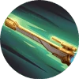

Mechanical Genius
Her extraordinary talent in the field of mechanics allowed Beatrix to produce 4 weapon(s) of truly awe-inspiring firepower.
Renner Basic Attack - Longshot: Fire a powerful shot in the enemy's current direction, dealing (+360%–535% Total Physical Attack) Physical Damage to the first target hit (this shot can be dodged, or blocked by others. Deals 50% damage to creeps).
Beatrix cannot crit, and converts every 1% Critical Chance gained into 1 Physical Attack |
Passive
Masterful Gunner Morph BUFF
Passive: Beatrix can carry 2 weapons at once, and increase her Physical Attack by 5–30.
Active: Beatrix takes 0.6 second to swap her primary weapon with the secondary weapon she has slung over her back, gaining an all-new way to attack and Ultimate. |
Skill 1
Tactical Reposition Blink BUFF
Beatrix: drops and rolls forward ( Renner); leaps and nimbly forward ( Bennett); rolls ahead sideways ( Wesker); slides forward ( Nibiru) and fully reloads her current weapon.| Blink | Penetrable movement. |
|
Skill 2


{kind=link}
{kind=link}
{kind=link}
{kind=link}